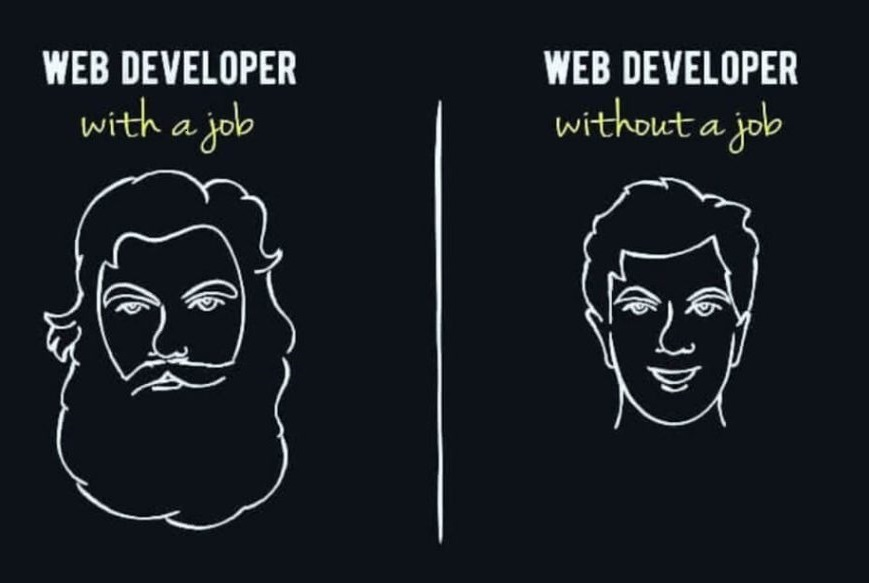

#myself {
Akshat Khurana
}
Executing Dreams() to Reality()++
01. About me
Hello! My name is Akshat and I really enjoy making aesthetic websites. It's startles me how styling can add so much flavour to even the most basic websites. Sometimes, I do get obsessed over the slightest visual elements and fixate over them until I don't find them presentable enough. It's frustrating at times but the satisfaction one gets after the obsession turns to beauty is simply unimaginable...
When I am not obsessing over stuff, you can find me reading all sorts of random stuff or you can find me juggling dumbells. I mean lifting at the gym xD
Bonus, click me
- Hire me, to see my beard grow lol02. Experience
-
Web Developer Intern at Sahu Technologies
- Developed various front-end focused websites, using HTML, CSS and BootStrap
- Worked on a python project focusing on GUI elements, used user interaction designing practices to make it more user friendly
- Interacted with other interns on regular basis, which gave a boost to my development knowledge and communication skills
-
Customer Service Intern at AADAR Herbals
- Rectified customer doubts, did follow up calls - ultimately leading to 20% increase in sales of products
- Interacting with customers on daily basis, developed quick decision skills and boosted my communication skills
-
Telemarketing Intern at PrivateCourt
- Worked and practiced various pitches, learnt about cold pitch and its effective execution
- Learnt how patient one has to be, while delivering cold pitches and how much effort goes into making a sale
03. Projects
-
Real Estate Management System - REMS
- Developed a full stack project to manage estate requirements - buy, sell, and rent. Inculcated multiple features which made the site more user-friendly, intuitive, and effective
-
Blockchain based Voting System - OneIndia
- Developed a voting based system by making various smart contracts, used solidity and dealt with various technologies in the process like Ganache and Metamask
04. Connect with me